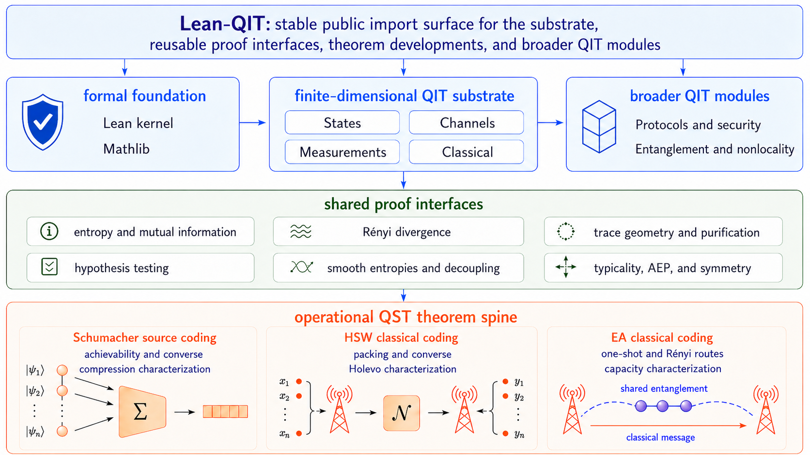

Presents Lean-QIT, a Lean 4 library formalizing finite-dimensional quantum information theory, including Schumacher, HSW, and entanglement-assisted capacity theorems.
Abstract
Quantum information theory (QIT) characterizes the capabilities and fundamental limits of quantum information processing, underpinning quantum communication, computation, and error correction. Formalizing its coding theorems requires connecting finite-block protocols, analytic inequalities, and asymptotic limits within a unified machine-checked framework. Existing developments, however, lack a reusable operational layer that defines codes, error criteria, achievable rates, and capacities independently of their information-theoretic characterizations. In this work, we present LeanQIT, a Lean 4 library for finite-dimensional QIT. It provides composable, kernel-checked interfaces for quantum states and channels, source and channel codes, finite-block performance criteria, hypothesis testing, one-shot quantities, and asymptotic rate constructions. Using this infrastructure, we formalize Schumacher's quantum source-coding theorem, the Holevo–Schumacher–Westmoreland classical-capacity theorem, and the entanglement-assisted classical-capacity theorem together with its strong converse. By separating operational definitions from analytic characterizations and exposing reusable achievability, converse, and asymptotic components, Lean-QIT provides a machine-readable foundation for formal QIT and a compositional knowledge substrate for emerging AI-assisted formalization, automated proof search, and agentic reasoning in quantum information and computation.
Problem
Formalizing quantum information theory coding theorems requires connecting finite-block protocols, analytic inequalities, and asymptotic limits in a machine-checked framework. Existing developments lack a reusable operational layer defining codes, error criteria, achievable rates, and capacities separately from their information-theoretic characterizations.
Approach
Lean-QIT is a Lean 4 library for finite-dimensional QIT organized as a layered proof stack over the Lean/Mathlib foundation. It provides kernel-checked interfaces for quantum states, channels, measurements, source and channel codes, finite-block performance criteria, hypothesis testing, one-shot quantities, and asymptotic rate constructions. Operational definitions are separated from analytic characterizations, exposing reusable achievability, converse, and asymptotic components.

Figure 1: Global architecture of Lean-QIT . The libaray is built on the trusted Lean/Mathlib foundation, finite-dimensional QIT substrate, shared proof interfaces, operational QST coding surfaces, and broader QIT modules. The QST spine consumes the shared interfaces to state and prove Schumacher source coding, HSW classical communication, and entanglement-assisted classical communication endpoints
Results
The library formalizes Schumacher's quantum source-coding theorem, the Holevo–Schumacher–Westmoreland classical-capacity theorem, and the entanglement-assisted classical-capacity theorem with its strong converse. The July 2026 snapshot contains over 200 Lean files and more than 150,000 lines.